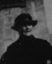
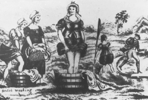

FastCounter by LinkExchange

| Birth | Marriage | Death |
| Ancestors | Brothers and Sisters | Descendants |
| Census | Homes and Schools | Occupation |
| SEARCH ENGINE | FAMILY TREES | FAMILY NAMES |
|
Name: |
Sarah Brisbane |
|
When: |
June 17th at 6h 30m PM |
|
Where: |
Ardeer Ironworks, Stevenston |
|
Sex: |
F |
|
Father: |
|
|
Profession: |
Labourer, Ironworks |
|
Mother: |
Sophia Brisbane M.S. Mills |
Source: New Register House, Edinburgh.
|
When: |
March 4th. |
|
Where: |
Main Street, Harthill |
|
Groom: |
Thomas Fraser - Bachelor - Age 20. |
|
Profession: |
Plasterer (Journeyman) |
|
Address: |
Busby |
|
Father: |
Andrew Fraser, Slater and Plasterer, Master |
|
Mother: |
Jane Fraser M.S. Howie (Deceased) |
|
Bride: |
Sarah Brisbane - Spinster - Age 21. |
|
Profession: |
Printfield Worker |
|
Address: |
Busby |
|
Father: |
Daniel Brisbane, Printfield Labourer |
|
Mother: |
Sophia Brisbane M.S. Mills (Deceased) |
|
Signed: |
James Forrest Minister at the Free Church of Scotland |
|
Signed: |
James Kechans Witness |
|
Signed: |
Annie Reid Witness |
Source: New Register House, Edinburgh.
|
Name: |
Sarah Fraser |
|
When: |
March 5th at 7h 30m PM |
|
Age: |
87 |
|
Sex: |
F |
|
Occupation: |
|
|
Marital Status: |
Widow |
|
Spouse: |
Thomas Meikleham Fraser, Plasterer [really Meiklehose] |
|
Where: |
253 Duke Street. |
|
Residence: |
104 Riverford Road, Glasgow |
|
Father: |
Daniel Brisbane, Ironwork Labourer (deceased) |
|
Mother: |
Sophia Brisbane M.S. Mills (deceased) |
|
Cause: |
Arterio Sclerosis. Cardiac failure. |
|
Doctor: |
Jean B. Lindsay MBChB |
|
Reported by: |
Thomas Fraser Son |
Source: New Register House, Edinburgh.
Buried in Eastwood Cemetery, Glasgow.
Thomas Fraser was "Puncle" who lived in upstairs apartment at 104 Riverford
Road.
(By Daniel Brisbane and Sophia Mills)
Step-brothers and sisters (By Janet McBride's first marriage)
Half-brothers and sisters (By Daniel Brisbane and Janet McBride)
<<<< See Sophia Fraser's
brothers and sisters >>>>
4 Crofs Row, Eglinton Iron
Works, Kilwinning.
Two families share the house, with 1 room with 1 or more windows each.
| Daniel Brisbane | Head | Mar | 30 | Coal Miner | Ireland |
| Susan Do. [really Sophia] | Wife | Mar | 28 | Coal Miner's wife | Do. |
| William Do. | Son | . | 9 | Scholar | Do. |
| James Do. | Son | . | 7 | Do. | Do. |
| Margaret Do. | Daur | . | 5 | Do. | Lanarkshire Glasgow |
| Sarah Do. | Daur | . | 3 | . | Ayrshire Stevenston |
| Daniel Do. | Son | . | 9mo | . | Do. Kilwinning |
| William MacLauchlan | Head | Mar | 36 | Coal Miner | Ireland |
| Helen Do. | Wife | Mar | 36 | . | Do. |
| Mary Do. | Daur | . | 8 | Scholar | Lanarkshire Coatbridge |
1871 Census - Shotts, Lanarkshire - LDS Microfilm 0104044 ED 8 Page 11.
Watts Building, Harthill, Shotts, Lanarkshire - 2 rooms with windows.
| Daniel Brisben | Head | Mar | 48 | Miner | Ireland |
| Sophia Do. | Wife | Mar | 45 | . | Do. |
| William Do. | Son | Unmar | 18 | Miner | Do. |
| James Do. | Son | Do. | 16 | Do. | Do. |
| Margaret Do. | Daur | Do. | 14 | . | Lanark Glasgow |
| Sarah Do. | Daur | Do. | 12 | Scholar | Ayrshire Stevenston |
| Daniel Do. | Son | Do. | 10 | Miner | Do. Kilwinning |
| Elizabeth Do. | Daur | Do. | 7 | Scholar | Do. Do. |
| John Do. | Son | Do. | 4 | . | Do. Overtown |
| Joseph Do. | Boarder | Do. | 16 | Miner | Ireland |
1881 Census - Shotts (Eastern District), Lanarkshire - Film 0203704 655-2 ED 1 Page 10
Main Street, Linds Land, Harthill, Shotts (Eastern District)
| Thomas Fraser | Head | Mar | 21 | Ironstone Miner | Lanark Hamilton |
| Sarah Do. | Wife | Mar | 22 | . | Ayrshire Stevenston |
1881 Census - Shotts (Eastern District), Lanarkshire - Film 0203704 655-2 ED 1 Page 14
Also in the census are four of Sarah's brothers and sisters in the Main
Street in Harthill.
| William Brisbane | Head | Mar | 27 | Coal Miner | Ireland |
| Margarate Do. | Wife | Mar | 27 | . | Ireland |
| Margarate Do. | Daur | . | 5 | Scholar | Lanark Shotts |
| Sophia Do. | Daur | . | 3 | . | Do. Do. |
| Sarah Do. | Daur | . | 1 | . | Do. Do. |
| Daniel Do. | Brother | Unm | 19 | Coal Miner | Ayr Kilwinning |
| Elizabeth Do. | Sister | Unm | 17 | Servant Domestic | " Kilmarnock |
| John Do. | Brother | . | 14 | Coal Miner | Do. Do. |
1891 Census - Eastwood, Renfrewshire - Film 0220181 Ed 6 Page 30.
11 Wilson Street, Eastwood, Pollokshaws, Renfrewshire.
| Thomas Fraser | Head | Mar | 30 | Plasterer | Lanarksh Hamilton |
| Sarah Do. | Wife | Do. | 30 | . | Ayrshire Stevenston |
| Sophia Do. | Daur | . | 7 | Scholar | Renfrewshire Govan |
| Thomas Do. | Son | . | 9 Mos. | . | Do. Neilston |
1901 Census - Eastwood, Renfrewshire - Entry 203, Page 39 of 54..
38 Maxwell St., Pollockshaws, Eastwood, East Renfrewshire.
| Thomas Fraser | Head | Mar | 41 | Plasterer | Worker | Lanarkshire Hamilton | 2 rooms |
| Sarah do. | Wife | Mar | 42 | Ayrshire Stevenston | |||
| Sophia do. | Daur | S. | 17 | Cotton Weaver | Worker | Lanarkshire Govan | |
| Thomas do. | Son | 11 | Scholar | Renfrewshire Barrhead | |||
| James do. | Son | 7 | do. | do. P'Shaws |
Had to look after her family when her mother died of pneumonia after trampling the washing outside.

Sarah's sisters (and possibly all her brothers too) left for Brisbane in Australia. Sarah stayed behind to marry Thomas Fraser.
Was very fond of her younger brother Daniel Brisbane. Her father and grandfather were also called Daniel Brisbane. Young Daniel was already working as a coal miner at the age of 10! See 1871 Shotts Census.
Used to talk a lot about Ireland, but never ever mentioned that her family was Irish and had come across to Scotland around 1855, just before she was born. It was quite a surprise when this was discovered.
Sarah's father, Daniel Brisbane, used to smuggle horses from Ireland into Scotland. The horses were brought by boat from Ireland and landed in the dark at an island near Ardrossan on the Ayrshire coast. From the island, the horses were made to swim the last mile to shore. The island is called "Horse Island". Daniel lived just a couple of miles from this island and would have had lots of relatives and friends back in Ireland as contacts.
Believed to have given her husband an overdose of morphine to put him out of his suffering when he was dying of cancer.
Could not write. Had tip of one finger missing. When picking up her pension, she took a long time signing a cross. Always said to her grand-daughter, Sarah Rodger, that that was why she could not write.
The circumstances of Sarah's death were fairly tragic. When she was very elderly, it was quite a strain for her daughter Sophia Fraser (Rodger) to look after her. Someone arranged for Sarah to be taken to hospital. Sarah was taken to a hospital or hospice in Duke Street by the hospital staff against her will. Apparently Duke Street was not in a nice area. Sarah died shortly afterwards. As she was dying in hospital, the patient behind the screens in the next bed was singing "Danny Boy" which had always been Sarah's favourite song. It nearly broke her daughter's heart.
A photo survives.
Return to top of page or Family Name Page.
Last Updated: November 13, 2002.
Number of visitors since February 1999 -
FastCounter
by LinkExchange